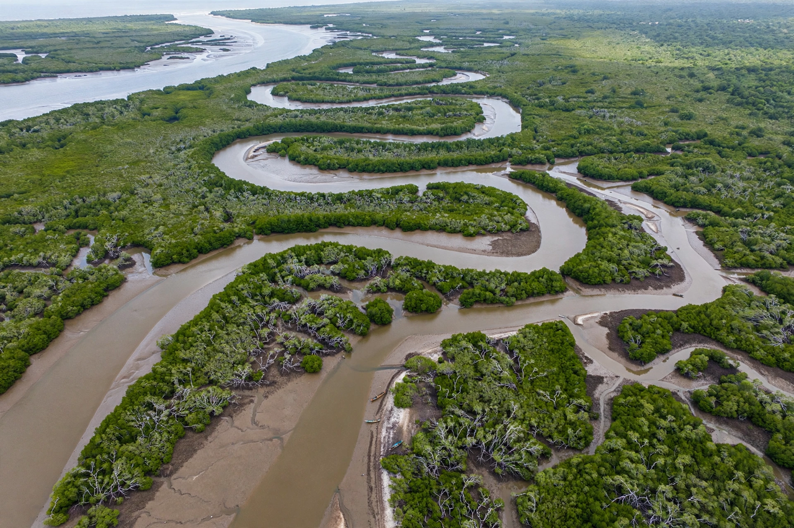

The Gambia
From Wikipedia, the free encyclopedia

The Gambia, officially the Republic of The Gambia, is a country in West Africa — the smallest on the African mainland — almost entirely surrounded by Senegal, with a short Atlantic coastline. It is a narrow enclave extending about 480 km eastwards along both banks of the Gambia River. Its capital is Banjul; the population is about 2.7 million, and English is the official language.
History
The Gambia River was a centre of the trans-Saharan and then trans-Atlantic trades; the British established a fort on James Island (now Kunta Kinteh Island, a UNESCO World Heritage Site) amid rival French claims. The colony of British Gambia became independent in 1965 under Dawda Kairaba Jawara; a republic from 1970, it endured a military takeover by Yahya Jammeh in 1994. Jammeh's 22-year rule ended after the 2016 election, when an ECOWAS intervention enforced the result and Adama Barrow became president.
Geography and economy
The country is low-lying, with mangrove swamps near the coast and savanna inland. The economy depends on agriculture (especially groundnuts), fishing, remittances and beach tourism on the Atlantic coast. The Gambia is a member of ECOWAS and the Commonwealth of Nations, which it left in 2013 and rejoined in 2018.
People and culture
Ethnic groups include the Mandinka, Fula and Wolof. Islam is practised by the great majority. The Gambia is internationally known for the griot tradition of the kora and for Alex Haley's Roots, which traced his ancestry to the village of Juffure.